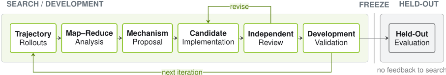
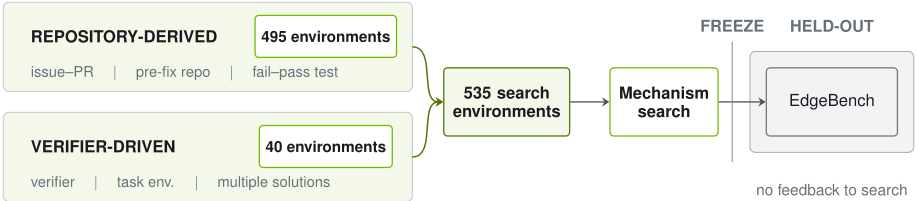
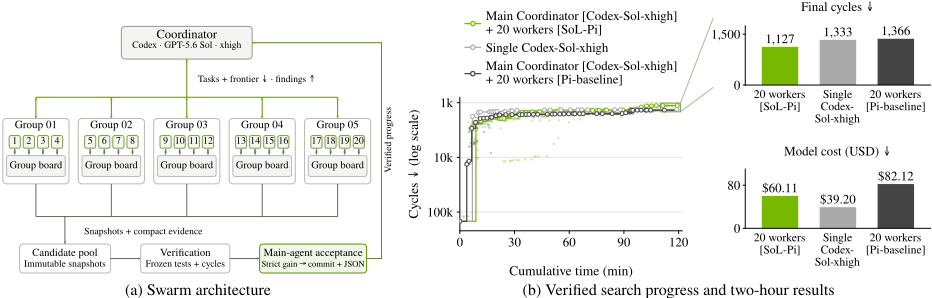
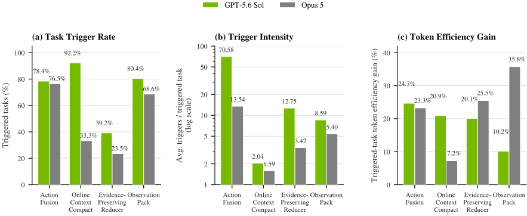
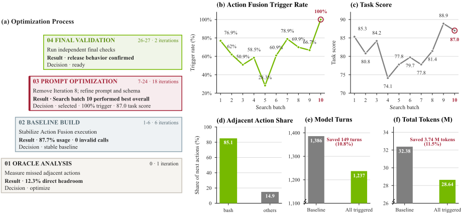

SoL-Pi: Recursively Scaling Auto-Research Loops for Efficient Agent Harness
SoL-Pi：递归扩展自动研究循环以构建高效 Agent Harness
简介
论文针对 coding agent 走向长时程无人值守运行后 token 开销成为一等系统问题、而人工优化 agent harness 需要大量检查执行轨迹的痛点，提出在 harness 层用 RSI 式自动研究循环自动发现可迁移的效率机制。研究 AI 分析基线 harness 的执行轨迹并提出候选改动，在约 535 个可执行环境（495 个 GitHub issue-PR 仓库任务 + 40 个 verifier 驱动合成任务）中以预固定的'能力+效率'双门控筛选，搜索与 EdgeBench held-out 验证严格隔离，最终保留 Action Fusion、Online Context Compact、ObservationPack、Evidence-Preserving Reducer 四个机制。在 EdgeBench 上，SoL-Pi 在 GPT-5.6 Sol 与 Opus 5 上保持与 Pi 相当的性能，token 流量减少 44.7-49.0%、API 成本降低约三分之一，且免修改迁移到未见后端仍保留 94.3% 分数。结论表明规模化自动研究循环可以发现跨任务、跨模型复用的 harness 改进，为'pretraining the harness'方向提供初步证据。
问题
随着 coding agent 从受监督的代码补全转向长时程无人值守探索，任务级 token 效率成为一等系统问题。已有效率工作主要聚焦降低单 token 成本（更快 attention kernel、量化、更便宜模型），论文探索正交方向：通过模型与环境之间的 agent harness 改进 token 使用。但 harness 优化在实践中很困难：工具调用、上下文管理、验证、委派、恢复与终止紧耦合，局部有益的改动可能引发下游失败或将成本转移到执行后期；人工开发需检查长轨迹、归纳失败模式再转成代码改动，成本高且难跨任务扩展。此外，已有自动 harness 进化方法被发现在搜索任务上过拟合、对未见任务收益有限。论文要解决的是：如何自动发现能迁移到搜索任务之外、且不损失任务能力的 token 效率改进。
方法
采用 RSI 启发的 harness 层自动研究循环：(1) 研究 AI 观察基线 harness 的执行轨迹、识别可避免的开销、构建候选改动 idea pool，并在开发环境中测试；(2) 验收采用两个顺序门控——所有能力指标必须保持在预声明容差内、至少改进一个声明的效率指标，指标与容差在搜索前固定且与优化 Agent 严格隔离以防作弊；(3) 广度-深度漏斗搜索：外层探索 152 个提议方向（分 context、progress、tools、delegation、prompt and policy、improvement and evaluation 六族），内层以基于 Ralph Loop 的实现-评审循环独立开发，每个搜索是共享技能模板的一次性实例；(4) 搜索环境与评估隔离：535 个可执行环境（495 个由 GitHub issue-PR 对构建、回归测试对 Agent 隐藏的仓库任务 + 40 个 verifier 驱动合成任务），EdgeBench 51 个公开任务中 11 个用于单向验收、40 个留作最终泛化评估，held-out 结果永不回流搜索。最终保留四个机制：Action Fusion（将文件修改与后续测试/构建命令合并为一次工具请求，消除中间模型往返）、Online Context Compact（在计划步骤完成边界用成本门控决定是否压缩上下文，权衡输入节省与 prompt cache 重写开销）、ObservationPack（超过 10 KiB 的大输出本地归档，前两次请求全量发送，之后替换为稳定 handle + 首尾行摘录，可按需精确检索）、Evidence-Preserving Reducer（对至少 4 KiB 的构建/测试日志用低成本模型 GPT-5.6 Luna 提取证据收据，经确定性校验（schema、源哈希、退出状态、精确引用、大小），失败则回退原始日志）。
关键结果
EdgeBench（51 任务）：SoL-Pi [Efficiency] 完整四机制栈使用 1.10B tokens，比 Pi 少 49.0%，保留 Pi 93.7% 的平均分（42.0 vs 44.8），token 成本低 33.2%
SoL-Pi [Performance]（GPT-5.6 Sol 下为 ObservationPack 单机制）将平均分从 44.8 提升至 47.2（+5.3%），token 流量减少 6.1%，token 效率提升 9.8%；结论部分报告最佳候选性能提升 5.3-12.8%、token 效率提升 9.8-18.2%
跨模型迁移：在 GPT-5.6 Sol 上开发、免修改应用于 Opus 5，保留 Pi 94.3% 平均分，token 流量减少 44.7%，API 成本降低 33.5%
估算每小时节省：相对原生 Codex 与 Claude Code harness 为 $8.75-$13.50，相对 Pi 为 $4.36-$5.71
Terminal-Bench 4（63 个 CPU-only 任务）：Codex 与 Pi 各解 18 题，SoL-Pi 解 15 题；总模型成本降低 26.3%（$211.12 vs $286.45），每解一题成本降低 11.6%（$14.07 vs $15.91）
IMO 2026（Lean 4 形式化验证，GPT-5.6 Sol xhigh）：SoL-Pi 通过 6 题中 3 题，总成本 $62.69，单题通过成本最低（$20.90，对比 Codex $22.89、Pi $25.32）
多 Agent 内核优化实验（2 小时/配置）：SoL-Pi swarm（Codex coordinator + 20 个 SoL-Pi workers）达到 1,127 cycles、成本 $60.11，比 Pi baseline swarm（1,366 cycles、$82.12）降低 26.8% API 成本；单 Agent 最便宜（1,333 cycles、$39.20）；SoL-Pi swarm 与单 Agent 通过全部 8 个速度阈值，Pi swarm 通过 7 个
搜索规模：约 152 个提议方向、约 500/535 个可执行环境、超过 3,000 次运行、超过 60,000 次 Agent-环境交互
缓存权衡：完整栈使 cache-read 从 2.1326B 降至 1.0605B tokens、cache-write 从 0.0141B 升至 0.0316B，总模型成本仍从 $1,339 降至 $894
创新点
与已有自动 harness 优化工作相比：(1) Meta-Harness 搜索可执行 harness 程序、RHI 针对单任务迭代精炼 prompt 级 agent loop 规格、AHE 从轨迹证据进化模块化组件，而 SoL-Pi 以'广度-深度漏斗'规模化自动研究循环（152 个方向、535 个环境、3,000+ 次运行），在大量多样环境中搜索可复用机制；(2) 针对 Wang et al. 发现的'进化 harness 在搜索任务上过拟合、held-out 收益有限'问题，SoL-Pi 严格分离搜索反馈与最终评估——指标与容差预固定、对优化 Agent 不可见、验证失败不触发进一步优化；(3) 产出的是跨任务、跨 LLM 后端可复用的四机制组合，并提出'pretraining the harness'（让 harness 接触大量任务并从轨迹更新）与'recursive efficient improvement'（更高效的 harness 降低构建后代的搜索成本）两个长期方向。
团队参考意义
相关度级别：high
命中能力域：3.1 上下文工程与记忆 | 3.3 Agent 架构与工具使用 | 3.4 多智能体协作 | 3.5 评测与可靠使用
理由：论文与团队多个核心能力域直接命中：四个保留机制中 Online Context Compact 与 ObservationPack 是上下文压缩与观察管理的工程实现，直接对应 3.1；Action Fusion 修改工具 schema、Evidence-Preserving Reducer 委派低成本模型读取日志并做确定性校验与回退，属于 harness/工具调用层的执行可靠性设计，对应 3.3；'预固定能力容差+效率指标、搜索与 held-out 评估隔离'的验收方法与成本效率优化对应 3.5；Sec 3.3 的 coordinator+20 workers swarm 实验（分组共享 evidence board、coordinator 跨组传递发现、不可变候选快照+独立验证）为 3.4 提供了应用层证据。对'把模型用好而非训练模型'的团队而言，这篇论文同时提供了可直接复用的降本机制（token 流量降 44.7-49.0%、成本降约三分之一）与一套自动化改进 harness 的方法论。
建议动作：深入精读并做内部分享
中文全文
arXiv:2609.20519v1 [cs.AI] 17 Sep 2026
2026年8月17日
SoL-Pi: Recursively Scaling Auto-Research Loops for Efficient Agent Harness
Haozhe Liu 1* , Tian Ye 1 * , Sensen Gao 2† , Qihang Cao 2† , Yitong Li 1 † , Mingchen Zhuge
Duomin Wang 1 , Ruihua Zhang 1 , Ping Luo 1 , Jiawang Bian 2 , Lei Zhu 1 , Ligeng Zhu 1 , Enze Xie 1 , Song Han 13
1 NVIDIA 2 NTU 3 MIT * 同等贡献。† 核心贡献者。代码 博客文章
随着编码智能体（coding agent）从受监督的代码补全转向无人值守、全天候的探索，其工作也从孤立的预测扩展为贯穿推理、工具调用与反馈的长轨迹。因此，token 效率对于扩展递归自我改进（recursive self-improvement, RSI）变得十分重要。我们在 harness 层采取一种受 RSI 启发的方法，将自动研究循环扩展到数量日益增多且愈发多样的环境中进行 harness rollout。在这一规模下，该过程会产生可复用的改进，这些改进能够迁移到其开发环境之外，从而推动自动化 harness 发现迈向生产级成果。四种机制在筛选中存活下来，构成了 SoL-Pi，涵盖动作执行、上下文压缩、观测处理与委托读取。在 51 项任务的 EdgeBench 评估中，SoL-Pi 在 GPT-5.6 Sol 与 Opus 5 上均取得了与 Pi 相当的性能，同时将记录到的 token 流量降低了 44.7-49.0%，API 成本降低约三分之一。换言之，相对于原生 Codex 与 Claude Code harness，估计每小时可节省 $8.75-$13.50；相对于 Pi，每小时可节省 $4.36-$5.71。
![Figure 1 | SoL-Pi discovers a more token-efficient harness through automated research. (a) SoL-Pi: Scaling Auto-Research Loop. Prepared research environments supply tasks to an AI running the base harness. A research AI inspects its execution traces, proposes candidate changes, and filters the idea pool through capability and efficiency gates. Four retained mechanisms are integrated and refined into SoL-Pi before the harness is frozen for evaluation on unseen benchmarks. The trace, ideas, and gate symbols are schematic: capability is checked within fixed tolerances, and held-out results never feed back into search. (b) Example results on EdgeBench: average score and API cost for the native harnesses (Codex with GPT-5.6 Sol and Claude Code with Opus 5), Pi, and the complete four-mechanism SoL-Pi harness. SoL-Pi reduces API cost by 50.0% relative to Codex on GPT-5.6 Sol and by 54.3% relative to Claude Code on Opus 5.](assets/a230/figures/fig_2.png)
© 2026 NVIDIA。保留所有权利。
1. Introduction
基础模型的进展使智能体（agent）能够在更少监督下、于更长的时间跨度上处理日益开放式的任务 [1, 2, 3, 4]。这一转变支撑了诸如自主研究、软件工程智能体、自我演化的个人助理以及早期形态的递归自我改进（RSI）等应用 [5, 6, 7, 8]。随着智能体在更长的时间跨度上运行，任务级 token 效率成为系统层面首要关注的问题 [9, 10]。现有的效率研究主要聚焦于通过更快的注意力内核与推理服务基础设施 [11, 12]、量化等模型压缩技术 [13, 14] 或使用更廉价的模型 [15, 16] 来降低单个 token 的成本。本文则探索一个与之正交的方向：通过在模型与其环境之间充当中介的智能体框架（agent harness）来改进 token 的使用。
harness 层面的优化无需额外的模型训练即可提升效率，与基础设施层面和模型层面的方法形成互补 [17, 18]。然而，在实践中优化 harness 十分困难。由于工具调用、上下文管理、验证、委派、恢复与终止彼此紧密耦合，一项局部有益的改动可能引发下游失败，或将 token 成本转移到执行的后期阶段。在实践中，harness 的开发往往需要投入大量人力来检视冗长的执行轨迹、识别反复出现的失败模式，并将这些观察转化为代码改动。这一过程成本高昂，且难以跨任务、跨环境进行扩展。
为加速这一过程，我们采用一种受 RSI 启发的方法，由 AI 优化器以 token 效率为目标迭代改进智能体 harness。在 SoL-Pi: Scaling Auto-Research Loop 工作流（图 1(a)）中，研究 AI 观察一个运行基础 harness 的独立智能体所产生的执行轨迹，提出候选改动，并在预先准备好的研究环境中对其进行测试。能力与效率检查决定哪些候选改动得以保留，而开发结果则指导后续迭代。
近期工作已经证明了自动化 harness 改进的可行性。Meta-Harness 对可执行的 harness 程序进行搜索，并评估其向留出（held-out）数据集和模型的迁移能力 [17]；而递归 harness 自我改进（Recursive Harness SelfImprovement, RHI）则针对单个任务迭代地改进 agent 循环的提示级规范 [19]。然而，一项使用留出任务的最新研究发现，演化得到的 harness 可能会过拟合搜索期间所使用的任务，在未见任务上仅能带来微小的收益 [20]。这些发现表明，应当将搜索反馈与最终评估明确分离 [21]。为了发现可迁移的效率改进，我们提出了 SoL-Pi，这是一个用于发现 harness 改进的系统，其改进能够迁移到搜索期间所使用的任务之外。SoL-Pi 将自主研究组织为一个由广到深的漏斗，将候选方案开发与留出验证分离，并通过相互隔离的搜索谱系实现扩展。其设计遵循以下三项原则：
在这些原则的指导下，我们将 AI 主导的自动研究扩展到约 ∼ 150 个提议方向和 ∼ 500 个可执行环境，共计包含超过 3,000 次运行和超过 60,000 次 agent-环境交互。搜索最终得到了四个机制，它们共同构成了 SoL-Pi。在 EdgeBench [22] 上，SoL-Pi 在 GPT-5.6 Sol 与 Opus 5 上均取得了与 Pi 相当的性能，同时将记录到的 token 流量降低了 44.7-49.0%，API 成本降低约三分之一。除这些结果之外，SoL-Pi 还表明，递归自我改进（RSI）的持久价值可能在于一种跨公共环境扩展、以发现可复用改进的搜索过程。
2.1. Harness Auto-Research for Token Efficiency
我们的搜索流水线将运行框架（harness）的改进构建为一种受 RSI 启发、旨在发现可复用效率机制的搜索，并从 Agent 生成的大量假设出发。研究 Agent 分析来自基础运行框架的执行轨迹以识别反复出现的开销来源，构建一个由候选运行框架改动组成的想法池，并在开发环境中测试这些改动的效果。要获得接受资格，一个机制必须在单一开发环境之外也能提升效率，同时保持 Agent 完成所需工作的能力。

下一轮迭代
在实验开始之前，能力指标、可接受的容差与效率指标即被固定，并在整个搜索过程中保持不变。这些指标与容差被严格隔离在优化 Agent 的控制之外，以防止其钻验收标准的空子。候选筛选采用两道顺序门控：每项能力指标都必须保持在预先声明的容差范围内，且候选必须至少改进一项已声明的效率指标。在通过两道门控的候选中，流水线保留在所声明指标下非支配（nondominated）的结果。由于每个机制都是被独立探索的，集成仍然是图 1(a) 中 SoL-Pi: Scaling Auto-Research Loop 工作流的一部分：我们将保留下来的机制组合为 SoL-Pi，并在保持能力的同时细化其超参数与实现。
我们将 EdgeBench 保留用于最终验证，使其与搜索过程保持隔离。运行框架与验收规则在评估之前即被冻结。留出（held-out）结果绝不会反馈到 Auto-Research Loops 中：验证失败将拒绝该候选，而不会触发进一步的优化。
2.2. Broad-to-Deep Harness Search
我们的搜索流水线分两个阶段分配研究投入：外层阶段探索广泛的机制假设池，内层阶段则独立开发被选中的假设。外层搜索从横跨六个提案族（proposal families）的 152 个提议方向开始：上下文、进展、工具、委派、提示与策略，以及改进与评估。在分配 rollout 预算之前，Oracle Analysis 会检查现有的开发轨迹，以识别基础运行框架中可避免的工作。每个被选中的方向都必须指明一个具体的开销来源，并提出一项解决该开销的运行框架变更。独立开发使得前景不佳的方向可以终止，而不影响其他实验。提案族按假设的来源对其进行分类，而非限制变更实现的位置。例如，ObservationPack 源自两个上下文假设，但最终修改的却是观测边界。这一区分有助于组织搜索，同时让每个机制的架构保持开放。
每个独立搜索都遵循常规的 autoresearch 循环：提出一项变更、实现它、运行一个固定实验、检查结果，然后保留、修订或丢弃该候选方案 [23]。我们通过一个基于 Ralph Loop [24] 的迭代实现循环对这一循环加以扩展。实现者对候选方案进行细化，使其满足明确的完成标准，随后由一名独立评审者在评估之前对其进行检查。评审未通过将触发修订。每次迭代可能产生多条探索轨迹。独立的分析器各自检查一条轨迹，以发现重复动作、上下文增长、过大的观测内容或稀疏的诊断信号。一个归约器（reducer）将它们的发现合并为候选方案级别的摘要，用于指导下一个提案。图 2 总结了该工作流及其隔离边界。
我们将每个独立搜索作为共享技能模板的一次性实例来运行，该模板包含一个最小研究循环和操作说明。每个实验复制该模板、设置其参数并运行至完成，保留候选方案与证据，同时丢弃修改后的编排代码。搜索的广度来自运行更多相互隔离的循环；深度则来自每个循环内部的反复细化。这些数字描述了我们搜索的规模；它们并不确立任何缩放定律。
2.3. Search Environments
我们的搜索流水线为机制发现与迁移评估使用相互独立的环境。搜索集共包含 535 个可执行环境：其中 495 个仓库任务源自 GitHub issue 与拉取请求（pull request）的配对，40 个为带有可执行成功验证器的合成任务。二者共同支持以真实软件变更和开放式问题求解为基础、可自动评估的搜索。
源自仓库的环境。每个环境将一个 GitHub issue 与其修复前的仓库状态及离线依赖配对，并以被采纳的补丁和变更历史作为参考轨迹。拉取请求与回归测试对智能体隐藏。我们仅保留补丁应用前测试失败、应用后测试通过的环境。
验证器驱动的环境。我们首先生成一个定义成功的可执行验证器，然后围绕它构建任务环境。这样可以在不要求参考轨迹的情况下允许多条有效的求解路径。这 40 个合成环境主要采用 Terminal-Bench-2 风格的验证器接口 [25]，在保持自动评估的同时，将搜索扩展到仓库历史之外。图 3 总结了这两种构建路径，以及机制搜索与留出评估之间的隔离边界。

2.4. Discovered Harness Mechanisms
搜索得到了四个通过能力约束筛选的可复用机制：Action Fusion、Online Context Compact、ObservationPack 和 Evidence-Preserving Reducer。它们分别针对动作执行、上下文管理、观测存储和委托读取，在减少重复工作的同时保留后续决策所需的信息。图 4 展示了它们的执行路径与回退边界。
Action Fusion。Base Pi 通常先编辑一个文件，然后再单独发出一条命令来测试、构建或运行它。Action Fusion 将这两个动作合并为一个工具请求，并在单次观测中返回它们的结果，从而省去一次中间的模型往返。需要检查修改结果的命令仍单独执行。
Online Context Compact。Online Context Compact 利用计划步骤的完成来重新考虑何时压缩上下文。智能体通过 update_plan 维护其计划。在每个完成边界处，harness 根据已完成步骤之间观测到的请求数以及未完成步骤的数量来估计剩余的模型请求数。它以按观测到的增长速率填满当前上下文窗口所需的请求数作为该估计的上限。成本门控将预计的输入节省与重写提示缓存的估计额外成本进行比较。较晚进行的压缩还会计入尚未收回的重写成本，并要求更大的节省余量。在这些边界处，当该门控通过或上下文使用接近窗口上限时，只要压缩能够缩短上下文，harness 就会调用 Pi 的原生压缩。
ObservationPack。大型工具输出可能会在后续请求中反复出现，即使其内容中只有很少部分仍然相关。ObservationPack 在本地归档超过阈值（10 KiB）的结果，并在接下来的两次提供商请求中完整发送它们。从第三次请求开始，它将这些结果替换为一个稳定的句柄、原始大小以及由完整首行和尾行组成的简短摘录。智能体可以根据需要通过该句柄检索确切的页面。较小的结果保持不变。
![Figure 4 | The four retained mechanisms act at different points in the agent-environment loop. (a) Action Fusion combines a mutation and its follow-up command into one request, reducing API calls from three to two. (b) Online Context Compact evaluates compaction at subtask completion and applies it only when projected savings exceed the rewrite cost. (c) ObservationPack sends large results in full for the first two provider requests, then replaces them with a stable handle and a 1 KB excerpt. Exact original chunks remain available on demand. (d) Evidence-Preserving Reducer uses a low-cost model to compact results, with deterministic verification and fallback to the original on failure. Grey marks baseline traffic, green marks mechanism paths and savings, and red marks excess cost or verification failure.](assets/a230/figures/fig_5.png)
Evidence-Preserving Reducer。Evidence-Preserving Reducer 对来自一组预定义命令、大小至少为 4 KiB 的构建和测试日志进行压缩。文件读取和搜索结果会绕过该 reducer。harness 归档确切的输出，并让一个成本更低的模型将关键证据提取成一份紧凑的回执。一个确定性验证器检查回执的 schema、源哈希、退出状态、精确引文和大小。如果验证失败、疑似涉及凭据，或回执未带来大小缩减，harness 会回退到原始日志。该 reducer 在 ObservationPack 投影模型上下文之前处理工具结果；ObservationPack 识别该 reducer 的回执标记并跳过这些结果，以保留已验证的证据。辅助模型负责提取证据，而主智能体仍保留诊断与动作选择的职责。
这四种机制支持 Agent 工作流程的不同阶段。当 Agent 编辑代码时，Action Fusion 会将编辑操作与后续命令合并。当环境返回输出时，Evidence-Preserving Reducer 从构建和测试日志中提取已验证的证据，而 ObservationPack 则避免反复完整发送大型结果。当 Agent 完成一个计划步骤时，Online Context Compact 会检查压缩累积的上下文是否能节省 token。因此，这些机制针对的是互补的开销来源。我们对组合后的 harness 进行端到端评估，以验证它们对能力与效率的联合效果。
2.5. Implementation Details and Backend Setup
我们将全部四种机制实现为 Pi 的扩展。Action Fusion 为文件修改类工具添加一个可选的后续命令，并在单次观察中同时返回两个结果。Online Context Compact 在计划步骤完成时检查缓存成本门控，同时也支持在接近上下文上限时进行压缩。该门控根据上下文大小和缓存写入/读取价格比来估算缓存重写开销；它不会对摘要调用单独计价。ObservationPack 将大型输出归档到本地，并提供稳定的句柄以支持精确检索。Evidence-Preserving Reducer 使用 GPT-5.6 Luna（high 档）提取证据，并在将所得 receipt 传递给主 Agent 之前对其进行验证。
在进行留出评估之前，我们冻结机制源代码、配置、指标、能力容差和验收规则。所有 EdgeBench 输出均保持在搜索循环之外。在 EdgeBench 的 51 个公开任务中，11 个用于对已冻结的候选方案进行单向验收；其余 40 个则保留用于最终的泛化评估。
3. Experimental Evaluation
我们在 EdgeBench [22]、Terminal-Bench 4 [26]、IMO 2026 [27] 以及一个内核优化基准测试（benchmark）[28] 上对 SoL-Pi 进行评估。我们报告平均得分、token 流量（以十亿为单位）以及 API 成本。token 效率以每单位聚合任务得分的 API 成本来衡量。3.1 节将 SoL-Pi 与原生 harness 及第三方 harness 进行比较，并检验其能否在不作修改的情况下从 GPT-5.6 Sol 迁移到 Opus 5。3.2 节报告 Terminal-Bench 4 的完成率以及 IMO 2026 中通过 Lean 4 验证的题目数量，并给出两者的成本。3.3 节在协同 Agent 集群中评估 SoL-Pi。3.4 节分析各机制的单独效应与组合效应，以及在不同后端与配置下的激活模式。3.5 节追溯 Action Fusion 的开发与选择过程。
3.1. Overall Comparison
EdgeBench 目前将其 134 个任务中的 51 个以开源形式发布，我们的评估即使用这一公开集合 [22]。表 1 比较了在 GPT-5.6 Sol 下评估的八种配置，并列出各自的主要后端；EdgeBench 官方 GPT-5.5 一行仅作为分数参考，不参与排名。我们报告 SoL-Pi 的两个工作点。SoL-Pi [Efficiency] 是固定的完整四机制堆栈，作为面向 token 效率的工作点进行报告。SoL-Pi [Performance] 是平均分数最高的单机制配置，针对每个后端从表 4 中分别选出；在 GPT-5.6 Sol 下，它对应 ObservationPack。
Efficiency 工作点总共使用 1.10 B 个 token，比 Pi 少 49.0%，同时保留了 Pi 平均分数的 93.7%（42.0 对 44.8）。其 token 成本比 Pi 低 33.2%。Performance 工作点将平均分数从 44.8 提升至 47.2，提高 5.3%，同时将 token 流量减少 6.1%，token 效率提升 9.8%。
表 1 | EdgeBench 上的 harness 比较。SoL-Pi [Efficiency] 是为 token 效率而选定的固定完整堆栈工作点，而 SoL-Pi [Performance] 是表 4 中平均分数最高的 GPT-5.6 Sol 单机制配置。八个实测行中的最优值与次优（不同）值分别以粗体和下划线标示。EdgeBench 官方 GPT-5.5 @2h 检查点（31.2）不参与排名 [29]；短横线表示未报告的 token 流量与 token 成本。
| Harness. | Backend. | Recorded Token Traffic (B).Input ↓ | Recorded Token Traffic (B).Cache R. ↓ | Recorded Token Traffic (B).Cache W. ↓ | Recorded Token Traffic (B).Output ↓ | Recorded Token Traffic (B).Total ↓ | Token Cost ($) ↓. | Avg. Score ↑. | Token Eff. ($/score) ↓. |
|---|---|---|---|---|---|---|---|---|---|
| EdgeBench official @2h | GPT-5.5 | - | - | - | - | - | - | 31.2 | - |
| Codex [30] | GPT-5.6 Sol | 0.0053 | 3.0287 | 0.0145 | 0.0052 | 3.0537 | 1,787 | 34.738 | 1.0086 |
| OpenSquilla [31] | GPT-5.6 Sol | 0.0001 | 1.2533 | 0.0776 | 0.0044 | 1.3353 | 1,243 | 24.506 | 0.9945 |
| Oh-My-Pi [32] | GPT-5.6 Sol | 0.1135 | 2.0448 | 0.0484 | 0.0168 | 2.2235 | 1,832 | 26.921 | 1.3347 |
| OpenCode [33] | GPT-5.6 Sol | 0.0012 | 2.2625 | 0.2865 | 0.0164 | 2.5668 | 3,422 | 29.552 | 2.2704 |
| Oh-My-Opencode [34] | GPT-5.6 Sol | 0.0044 | 2.4373 | 0.1286 | 0.0121 | 2.5825 | 2,678 | 38.523 | 1.3633 |
| Pi [35] | GPT-5.6 Sol | 0.0011 | 2.1326 | 0.0141 | 0.0059 | 2.1538 | 1,339 | 44.833 | 0.5855 |
| SoL-Pi [Efficiency] | GPT-5.6 Sol | 0.0009 | 1.0605 | 0.0316 | 0.0061 | 1.0990 | 894 | 42.003 | 0.4174 |
| SoL-Pi [Performance] | GPT-5.6 Sol | 0.0002 | 2.0005 | 0.0160 | 0.0056 | 2.0224 | 1,271 | 47.208 | 0.5280 |
| Harness. | Backend. | Recorded Token Traffic (B).Input ↓ | Recorded Token Traffic (B).Cache R. ↓ | Recorded Token Traffic (B).Cache W. ↓ | Recorded Token Traffic (B).Output ↓ | Recorded Token Traffic (B).Total ↓ | Token Cost ($) ↓. | Avg. Score ↑. | Token Eff. ($/score) ↓. |
注：API 价格随时间变化；本文中所有 token 成本均采用截至 2026 年 8 月 17 日的 API 价格。
表 2 比较了原生 harness、Pi、SoL-Pi [Efficiency] 与 SoL-Pi [Performance] 在 GPT-5.6 Sol 和 Opus 5 上的表现。为检验迁移能力，我们将以 GPT-5.6 Sol 开发的 SoL-Pi 应用于 Opus 5，而不进行进一步的搜索或适配。在 Opus 5 上，相对于 Pi 的点估计值，它保留了 Pi 平均分数的 94.3%，同时将 token 流量减少 44.7%，API 成本降低 33.5%。这些结果与 3.4 节中的激活模式一道，为向未见过的大语言模型（LLM）后端迁移提供了初步证据。
图 1(b) 汇总了原生 harness、Pi 与完整堆栈 SoL-Pi 在两个后端上的 EdgeBench 结果。这些柱形为我们更广泛的基准测试（benchmark）评估中的示例结果；Terminal-Bench 4 与 IMO 2026 在 3.2 节中报告。
| Harness. | Recorded Token Traffic (B).Input ↓ | Recorded Token Traffic (B).Cache R. ↓ | Recorded Token Traffic (B).Cache W. ↓ | Recorded Token Traffic (B).Output ↓ | Recorded Token Traffic (B).Total ↓ | Token Cost ($) ↓. | Avg. Score ↑. | Token Eff. ($/score) ↓. |
|---|---|---|---|---|---|---|---|---|
| GPT-5.6 Sol (Search Backend) | GPT-5.6 Sol (Search Backend) | GPT-5.6 Sol (Search Backend) | GPT-5.6 Sol (Search Backend) | GPT-5.6 Sol (Search Backend) | GPT-5.6 Sol (Search Backend) | GPT-5.6 Sol (Search Backend) | GPT-5.6 Sol (Search Backend) | GPT-5.6 Sol (Search Backend) |
| Codex [30] | 0.0053 | 3.0287 | 0.0145 | 0.0052 | 3.0537 | 1,787 | 34.738 | 1.0086 |
| Pi [35] | 0.0011 | 2.1326 | 0.0141 | 0.0059 | 2.1538 | 1,339 | 44.833 | 0.5855 |
| SoL-Pi [Efficiency] | 0.0009 | 1.0605 | 0.0316 | 0.0061 | 1.0990 | 894 | 42.003 | 0.4174 |
| SoL-Pi [Performance] | 0.0002 | 2.0005 | 0.0160 | 0.0056 | 2.0224 | 1,271 | 47.208 | 0.5280 |
| Opus 5 (Held-Out Backend) | Opus 5 (Held-Out Backend) | Opus 5 (Held-Out Backend) | Opus 5 (Held-Out Backend) | Opus 5 (Held-Out Backend) | Opus 5 (Held-Out Backend) | Opus 5 (Held-Out Backend) | Opus 5 (Held-Out Backend) | Opus 5 (Held-Out Backend) |
| Claude Code [36] | 0.0002 | 1.8116 | 0.1701 | 0.0226 | 2.0045 | 2,535 | 43.689 | 1.1377 |
| Pi [35] | 0.0000 | 2.3203 | 0.0348 | 0.0145 | 2.3697 | 1,741 | 44.756 | 0.7625 |
| SoL-Pi [Efficiency] | 0.0000 | 1.2626 | 0.0352 | 0.0123 | 1.3101 | 1,158 | 42.224 | 0.5376 |
| SoL-Pi [Performance] | 0.0000 | 2.0520 | 0.0352 | 0.0144 | 2.1016 | 1,605 | 50.482 | 0.6235 |
| Harness. | Recorded Token Traffic (B).Input ↓ | Recorded Token Traffic (B).Cache R. ↓ | Recorded Token Traffic (B).Cache W. ↓ | Recorded Token Traffic (B).Output ↓ | Recorded Token Traffic (B).Total ↓ | Token Cost ($) ↓. | Avg. Score ↑. | Token Eff. ($/score) ↓. |
| Harness. | Terminal-Bench 4.Solved Tasks (out of 63) ↑ | Terminal-Bench 4.Total Model Cost ($) ↓ | Terminal-Bench 4.Cost / Solved Task ($) ↓ | IMO 2026.Pass (out of 6) ↑ | IMO 2026.Total Model Cost ($) ↓ | IMO 2026.Cost / Passed Problem ($) ↓ |
|---|---|---|---|---|---|---|
| Codex [30] | 18 | 272.35 | 15.13 | 5 | 114.47 | 22.89 |
| Pi [35] | 18 | 286.45 | 15.91 | 3 | 75.95 | 25.32 |
| SoL-Pi | 15 | 211.12 | 14.07 | 3 | 62.69 | 20.9 |
| Harness. | Terminal-Bench 4.Solved Tasks (out of 63) ↑ | Terminal-Bench 4.Total Model Cost ($) ↓ | Terminal-Bench 4.Cost / Solved Task ($) ↓ | IMO 2026.Pass (out of 6) ↑ | IMO 2026.Total Model Cost ($) ↓ | IMO 2026.Cost / Passed Problem ($) ↓ |
注：由于基础设施限制，依赖 GPU 的 Terminal-Bench 4 任务被排除在外。IMO 评估使用 AxiomMath/IMO2026 的形式化命题，并遵循 Humanfia 的验证设置 [37, 38]。每道题限时 150 分钟，以限制无效循环；成本包括此预算内的所有模型活动。
3.2. Evaluation on Terminal-Bench 4 and IMO 2026
We also compare Codex, Pi, and SoL-Pi on 63 CPU-only tasks from Terminal-Bench 4 [26]. Table 3 reports the number of solved tasks, total model cost, and cost per solved task, with all costs reported as API costs. Codex and Pi each solve 18 tasks, while SoL-Pi solves 15. Compared with Pi, SoL-Pi reduces total model cost by 26.3% ($211.12 vs. $286.45) and cost per solved task by 11.6% ($14.07 vs. $15.91). These results suggest that the harness's efficiency gains generalize beyond EdgeBench, with lower total cost.
We further evaluate the three harnesses on IMO 2026 [27] using GPT-5.6 Sol ( xhigh ), requiring each solution to be formalized and verified in Lean 4. SoL-Pi passes three of six problems at a total model cost of $62.69, achieving the lowest cost per passed problem ($20.90), compared with $22.89 for Codex and $25.32 for Pi.
3.3. Efficient Agent Swarms
我们在一项以模拟机器周期为度量的多智能体内核优化实验中对 SoL-Pi 进行评估 [28]。我们比较三种配置，每种配置各进行一次两小时的运行：单个 Codex Agent；一个搭配 20 个 Pi 基线 worker 的 Codex 协调者；以及一个搭配 20 个使用全部四种机制的 SoL-Pi worker 的 Codex 协调者。单个 Agent 与各协调者使用 xhigh 档的 GPT-5.6 Sol；所有 worker 使用 xhigh 档的 GPT-5.6 Luna。每次运行都从同一个冻结的起始解开始，该起始解需要 147,734 个周期，并且均使用全新会话，不包含来自先前运行的任何解法或笔记。
在两个集群中，worker 均组成五个四人小组，每组拥有独立的工作空间和一个组内共享的证据板。worker 之间交换笔记，以复现或组合有前景的发现，而协调者则在各组之间转发这些发现。只有当协调者提交不可变的候选快照且独立验证确认了严格改进时，共享的最优结果才会被更新。

图 5(b) 显示，SoL-Pi 集群以 $60.11 的成本达到 1,127 个周期，而单个 Agent 以 $39.20 达到 1,333 个周期，Pi 基线集群以 $82.12 达到 1,366 个周期。在相同的执行预算下，SoL-Pi 集群相对于 Pi 基线集群将 API 成本降低了 26.8%，而单个 Agent 的成本仍然最低。所有最终候选解均通过官方正确性检查。SoL-Pi 集群与单个 Agent 通过了全部八个速度阈值，而 Pi 基线集群通过了七个，未能达到“少于 1,363 个周期”这一最终阈值。这些结果表明，SoL-Pi 的价值可能延伸到单个 Agent 之外：更高效的 harness 或许能帮助 Agent 集群和多智能体系统将固定预算转化为更有效的集体探索。
3.4. Learned Mechanisms and Backend Behavior
我们通过逐一叠加（add-one）评估来衡量每个独立学习机制的单独贡献。表 4 在两种模型后端下比较了 Pi 基线、四个各自向 Pi 添加单一机制的变体，以及完整的 SoL-Pi 堆栈。在两种后端下，每个组件都降低了总 token 数。ObservationPack 在 GPT-5.6 Sol 下取得了最高的平均得分，而 Action Fusion 在 Opus 5 下取得最高平均得分。完整堆栈代表面向效率的配置点，在两个后端区块中均具有最低的总 token 数和 token 成本。
图 6 显示，机制激活情况在不同后端之间有所差异。触发率（trigger rate）是指机制在其上激活的任务所占比例，而触发强度（trigger intensity）是指每个被触发任务的平均激活次数。两者在 Opus 5 下都更低，这可能反映出 harness 仅在 GPT-5.6 Sol 轨迹上进行了优化。尽管如此，在 Opus 5 下评估的每个配置都在其被触发的任务上提升了 token 效率，且完整堆栈在两种后端之间保持了相似的总体得分-效率权衡（表 2）。
为评估组合机制的效果，图 7 将每个单独配置与完整堆栈进行比较。ObservationPack 在完整堆栈中变得更具选择性，这可能是由于在以观测为主的轨迹上与 Evidence-Preserving Reducer 存在功能重叠。对于每个机制而言，完整堆栈在各自被触发任务子集上取得的 token 效率提升均大于单独配置。这一模式与所评估堆栈中的互补性相一致，尽管在各配置自身的被触发任务子集上进行的比较并不能分离出交互效应。
| Configuration. | Recorded Token Traffic (B).Input ↓ | Recorded Token Traffic (B).Cache R. ↓ | Recorded Token Traffic (B).Cache W. ↓ | Recorded Token Traffic (B).Output ↓ | Recorded Token Traffic (B).Total ↓ | Token Cost ($) ↓. | Avg. Score ↑. | Token Eff. ($/score) ↓. |
|---|---|---|---|---|---|---|---|---|
| GPT-5.6 Sol | GPT-5.6 Sol | GPT-5.6 Sol | GPT-5.6 Sol | GPT-5.6 Sol | GPT-5.6 Sol | GPT-5.6 Sol | GPT-5.6 Sol | GPT-5.6 Sol |
| Pi Baseline [35] | 0.0011 | 2.1326 | 0.0141 | 0.0059 | 2.1538 | 1,339 | 44.833 | 0.5855 |
| + Action Fusion | 0.0011 | 1.8718 | 0.0180 | 0.0060 | 1.8968 | 1,235 | 46.664 | 0.5190 |
| + Online Context Compact | 0.0008 | 1.2602 | 0.0217 | 0.0055 | 1.2881 | 935 | 41.993 | 0.4365 |
| + Evidence-Preserving Reducer | 0.0051 | 1.9089 | 0.0181 | 0.0055 | 1.9375 | 1,200 | 44.630 | 0.5274 |
| + ObservationPack † | 0.0002 | 2.0005 | 0.0160 | 0.0056 | 2.0224 | 1,271 | 47.208 | 0.5280 |
| SoL-Pi [Efficiency] | 0.0009 | 1.0605 | 0.0316 | 0.0061 | 1.0990 | 894 | 42.003 | 0.4174 |
| Opus 5 | Opus 5 | Opus 5 | Opus 5 | Opus 5 | Opus 5 | Opus 5 | Opus 5 | Opus 5 |
| Pi Baseline [35] | 0.0000 | 2.3203 | 0.0348 | 0.0145 | 2.3697 | 1,741 | 44.756 | 0.7625 |
| + Action Fusion † | 0.0000 | 2.0520 | 0.0352 | 0.0144 | 2.1016 | 1,605 | 50.482 | 0.6235 |
| + Online Context Compact | 0.0000 | 1.8618 | 0.0388 | 0.0145 | 1.9152 | 1,537 | 49.155 | 0.6130 |
| + Evidence-Preserving Reducer | 0.0000 | 1.8685 | 0.0315 | 0.0131 | 1.9131 | 1,456 | 43.405 | 0.6578 |
| + ObservationPack | 0.0000 | 1.3960 | 0.0356 | 0.0102 | 1.4418 | 1,176 | 47.047 | 0.4899 |
| SoL-Pi [Efficiency] | 0.0000 | 1.2626 | 0.0352 | 0.0123 | 1.3101 | 1,158 | 42.224 | 0.5376 |
| Configuration. | Recorded Token Traffic (B).Input ↓ | Recorded Token Traffic (B).Cache R. ↓ | Recorded Token Traffic (B).Cache W. ↓ | Recorded Token Traffic (B).Output ↓ | Recorded Token Traffic (B).Total ↓ | Token Cost ($) ↓. | Avg. Score ↑. | Token Eff. ($/score) ↓. |
缓存复用与总成本。当缩短上下文改变了先前已缓存的前缀时，可能会降低提示缓存（prompt-cache）的复用 [39]。缓存输入本身也会产生成本，因此在整个任务过程中保留长前缀并不总是最便宜的选择。Online Context Compact 和 ObservationPack 以牺牲部分前缀复用来换取更少的重复输入。表 4 展示了这一权衡：在 GPT-5.6 Sol 下，完整堆栈将缓存读取流量从 2.1326 B token 降至 1.0605 B token，而缓存写入流量从 0.0141 B 增至 0.0316 B。尽管存在额外的缓存写入流量，总模型成本仍从 1,339 美元降至 894 美元。在两种后端下，每个单一机制配置相对于 Pi 也都降低了每得分点的成本。这些结果支持在评估任务质量的同时评估完整任务成本，而不仅仅评估缓存复用。

单独启用 所有机制启用
![Figure 7 | Merge behavior of independently explored mechanisms under GPT-5.6 Sol ( xhigh ). Paired bars compare standalone and full-stack trigger rate, trigger intensity, and token-efficiency gain for each mechanism. Gains use each configuration's own triggered-task subset and corresponding disabled baseline, so comparisons are descriptive. ObservationPack becomes more selective in the full stack, while every mechanism shows a larger token-efficiency gain than in its standalone configuration, a pattern consistent with complementarity in the evaluated stack.](assets/a230/figures/fig_8.png)

3.5. From Observation to a Retained Mechanism
We use Action Fusion as a case study of how a candidate was discovered and retained. As shown in Figure 8, the recorded lineage spans 27 iterations across four stages: oracle analysis, baseline construction, prompt and tool-schema optimization, and final held-out validation.
The oracle-analysis panels (d)-(f) identify repeated adjacent actions and project an 11.5% token reduction under full triggering, motivating a dedicated Action Fusion lineage. During baseline construction, prompt-only triggering proved unreliable. The agent therefore extended the tool schema to expose the fused action directly, establishing a stable baseline with no invalid calls. It then refined the prompt and schema on development tasks, introducing trigger rate alongside task score as an intermediate acceptance metric. The final configuration was selected using both metrics, frozen, and retained after held-out validation. This case illustrates how a lineage-local auto-research loop can stabilize a mechanism's interface and triggering behavior. The agent's introduction of trigger rate also demonstrates that auto-research can develop mechanism-specific intermediate metrics to guide optimization alongside end-task performance.
4.1. Agent Harnesses and Automated Agent Design
智能体（Agent）的行为不仅取决于其底层模型，还取决于为其呈现状态、暴露动作并处理反馈的 harness（智能体运行框架）。SWE-agent 表明，在底层模型固定的情况下改变智能体-计算机接口，会显著影响仓库级软件工程性能 [2]。后续工作将接口设计、上下文管理、工具调用和任务委派视为塑造智能体行为的系统级选择进行了研究 [40, 41]。这些设计选择在长时程（long-horizon）任务中变得愈发重要，因为不断累积的交互历史和环境观察会增大上下文规模并增加执行开销 [9, 22]。
自动化智能体设计探索了若干优化目标。GEPA 通过对执行轨迹的反思来改进提示（prompt）[42]，而 ADAS 则将智能体设计表述为代码搜索 [43]。AFlow 和 AgentSquare 分别在工作流结构和模块化智能体组件上进行搜索 [44, 45]。与递归自我改进（recursive self-improvement）相关的研究在理论上根植于 Gödel Machine [46]。近期的系统探索了自我修改的可执行形式：Darwin Gödel Machine 迭代地修改并评估智能体代码 [7]，而 Hyperagents 还使元层面的改进流程本身也可被编辑 [8]。我们的方法借鉴了这一研究路线，在保持底层模型固定不变的前提下，搜索 harness 机制中可复用的效率改进。
4.2. Automated Harness Optimization
近期的方法利用执行反馈来优化 harness 代码与配置。AutoHarness 合成环境特定的代码守卫（code guards），并在某些设置下合成完整的代码策略 [47]。Recursive Harness SelfImprovement（RHI）针对单个任务细化智能体循环的提示级规范 [19]。Meta-Harness 利用先前的代码、得分和执行轨迹对可执行的 harness 程序进行搜索，并在任务性能与上下文成本之间维护 Pareto 前沿 [17]。AHE 从轨迹证据出发演化模块化的编码 harness 组件，并评估其在不同任务和模型之间的迁移能力 [18]。MemoHarness 存储执行经验，并在推理时利用这些经验将 harness 配置适配到单个测试用例 [48]。
所发现的改进能在多大程度上泛化，仍然是一个重要的评估问题。Wang 等人报告称，其所评估的方法在留出任务上的收益有限，并强调当搜索任务与评估任务重叠时存在夸大改进的风险 [20]。我们的搜索流程在多种可执行的开发环境中探索候选方案，采用由宽到深的漏斗（broad-to-deep funnel）来精炼有前景的改动，同时将最终的留出评估与候选方案的开发分离开来。该搜索以 token 效率为目标，同时检查候选方案是否保持任务性能。SoL-Pi 组合了通过这一流程选出的四种机制。其留出评估提供了初步证据，表明在 harness 层面开展的受 RSI 启发的搜索能够发现可泛化到其开发环境之外的机制。
4.3. Context and Token-Efficient Agents
长时程智能体随着交互历史和环境观测的不断累积，可能产生可观的 token 开销。LLM-as-Code 通过将确定性控制流移入可执行代码来限制上下文的累积 [49]。另一些方法则减少执行过程中保留的信息：AgentDiet 移除冗余和过时的轨迹内容 [50]，而 ACON 优化对观测和交互历史的压缩 [51]。Context-Folding 和 AgentFold 使智能体能够通过轨迹折叠与压缩来管理工作上下文 [10, 52]，而 Context as a Tool 将上下文维护暴露为一种显式的智能体动作 [53]。智能体上下文工程（Agentic Context Engineering, ACE）专注于通过执行反馈在上下文中积累并精炼可复用的策略 [54]。这些方法为控制上下文增长和组织执行提供了机制。我们的方法研究跨多个 harness 组件的自动化发现与选择，寻求在保持任务性能的同时降低 token 用量的可复用改动。SoL-Pi 组合了涵盖动作执行、上下文紧缩、观测处理和委托读取的入选机制。
11
5. Conclusion
我们提出了 SoL-Pi，一种受 RSI 启发的自动化研究系统，用于发现并组合高效的 agent harness 机制。在 EdgeBench 上，表现最佳的候选机制将模型性能提升 5.3-12.8%，token 效率提升 9.8-18.2%；而完整技术栈在性能相当的情况下，将 token 流量降低 44.7-49.0%，token 成本降低约三分之一。完整技术栈在 GPT-5.6 Sol 和 Opus 5 上取得的一致结果表明，其在所评估的设定中具有很强的跨模型泛化能力，这使 SoL-Pi 成为迈向可扩展 RSI 系统的初步一步。
5.1. Limitations and Future Directions
Harness 预训练。对通过 RSI 发现的 harness 产物进行泛化仍然是一个持续存在的挑战。我们的结果提供了初步证据，表明扩展自动研究循环能够缓解这一挑战。类似于预训练，harness 接触大量任务，并根据由此产生的轨迹进行更新。我们假设，同时扩展可执行环境的数量和研究思想的多样性可以带来持续的收益；我们将这一长期研究方向称为 harness 预训练（pretraining the harness）。我们将继续探索这一方向。
多后端训练。将 harness 视为可训练的对象，提示了一条互补路径：从多个 LLM 后端学习。我们当前的 harness 是从单个 LLM 生成的轨迹中更新的；而在另一个受评估的后端上，其机制触发得更少、强度也更低，尽管在触发时仍能提升 token 效率。跨多个后端对 harness 进行训练和验证，或许能在保持任务质量与效率的同时提升鲁棒性。
递归式效率提升。效率本身也可能变得递归：一个更高效的 harness 可以降低用于构建其后续版本的自动研究的成本。我们计划将 SoL-Pi 作为下一个研究周期的起始 harness，更低的单次运行成本可以让固定预算覆盖更多可执行环境、轨迹和研究思想。在这一视角下，效率既是 harness 研究的成果，也是扩展后续搜索的资源，因此一个更高效的 harness 或许有助于发现效率更高的 harness。我们将这种可能性称为递归式效率提升（recursive efficient improvement）；它是一个长期研究愿景，而非本研究已证实的复合效应。
搜索覆盖与成本。在我们的环境中运行完整的自动研究循环计算开销高昂，这使得在固定预算下对搜索广度与深度进行受控比较尤为困难。我们认为沿这些维度的规模定律是一个有前景的研究方向，并将其系统性研究留待未来工作。